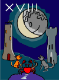
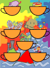
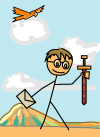
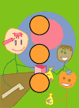
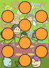

Index of all the cards (SVG)
Each of the small images on this page links to a larger picture of the complete card with commentary.

0. The Fool |

I. The Magician |
II. The Papess |

III. The Empress |
IIII. The Emperor |

V. The Pope |

VI. The Lovers |
VII. The Chariot |

VIII. Justice |

VIIII. The Hermit |

X. The Wheel of Fortune |
XI. Strength |
XII. The Hanged Man |

XIII. Death |
XIIII. Temperance |

XV. The Devil |
XVI. The Tower |
XVII. The Star | 
XVIII. The Moon |

XVIIII. The Sun |
XX. Judgement |

XXI. The World |

The Ace of Wands |

The Two of Wands |
The Three of Wands |

The Four of Wands |
The Five of Wands |
The Six of Wands |

The Seven of Wands |
The Eight of Wands |
The Nine of Wands |
The Ten of Wands |

The Page of Wands |

The Knight of Wands |
The Queen of Wands |
The King of Wands |

The Ace of Cups |

The Two of Cups |

The Three of Cups |

The Four of Cups |

The Five of Cups |
The Six of Cups | 
The Seven of Cups |
The Eight of Cups |

The Nine of Cups |

The Ten of Cups |
The Page of Cups |

The Knight of Cups |

The Queen of Cups |

The King of Cups |

The Ace of Swords |

The Two of Swords |

The Three of Swords |

The Four of Swords |

The Five of Swords |

The Six of Swords |
The Seven of Swords |

The Eight of Swords |

The Nine of Swords |
The Ten of Swords | 
The Page of Swords |
The Knight of Swords |

The Queen of Swords |

The King of Swords |

The Ace of Coins |

The Two of Coins | 
The Three of Coins |
The Four of Coins |

The Five of Coins |

The Six of Coins |
The Seven of Coins |

The Eight of Coins |

The Nine of Coins | 
The Ten of Coins |
The Page of Coins |

The Knight of Coins |

The Queen of Coins |

The King of Coins
These index images are in PNG format. The pages for the cards are in SVG.